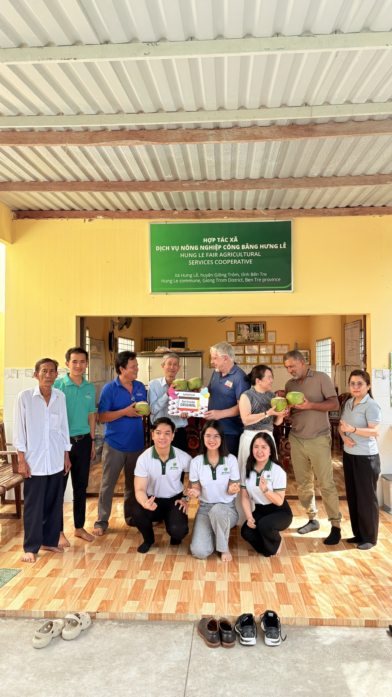
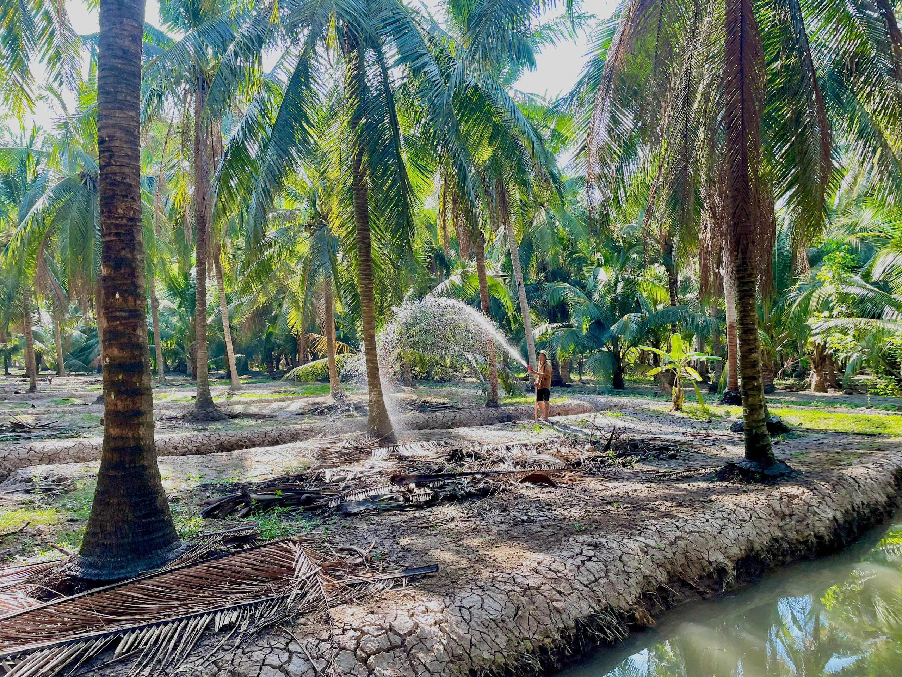
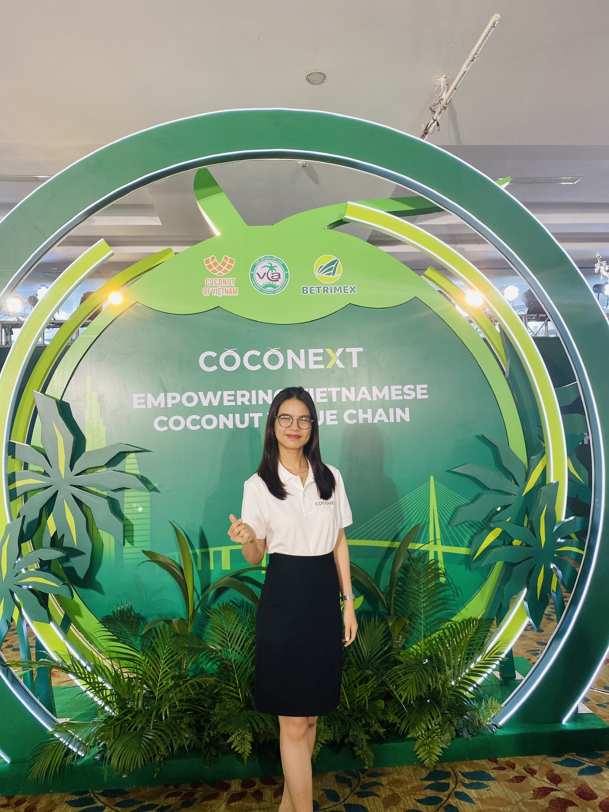
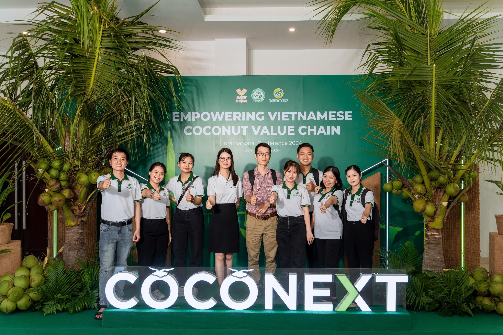

Xin chào, tôi là
Đồng hành cùng doanh nghiệp xây dựng vùng nguyên liệu Organic đạt chuẩn quốc tế thông qua chiến lược phát triển vùng trồng, hệ thống ICS, truy xuất nguồn gốc và quản lý chứng nhận. Mỗi vùng nguyên liệu không chỉ đáp ứng yêu cầu kiểm định mà còn tạo giá trị bền vững cho doanh nghiệp và cộng đồng nông dân.
Giới thiệu LinkedInTích cực, hòa đồng, ham học hỏi, thích vượt qua thử thách và thực sự quan tâm đến việc ứng dụng công nghệ trong quản lý truy xuất nguồn gốc và kiểm soát nội bộ.
Có kinh nghiệm 8 năm dẫn dắt việc triển khai và quản lý các chương trình chứng nhận hữu cơ và bền vững: EU, NOP, JAS, FAIRTRADE, GLOBAL GAP, NATULAND, CHINA, KOREA, TAIWAN, RA...
Học vấn: Khoa học cây trồng | Đại học Cần Thơ (Xếp loại: Giỏi).
Word/Excel/Pivot excel/Canva/FRM
Làm việc nhóm
Lập kế hoạch/Quản lý đội nhóm
Tiếng anh giao tiếp
Quản lý Hệ thống Truy xuất nguồn gốc và Kiểm soát Nội bộ (ICS)

Thời gian: 2024 - 2025
Leader dự án, quản lý timeline, nhân sự, chi phí, hợp tác với cán bộ địa phương, tập huấn kiến thức chứng nhận cho Hợp tác xã.

Thời gian: 2019 - 2025
Khảo sát và tham gia đánh giá vùng nguyên liệu Dừa Organic nâng quy mô từ 4.000 ha lên 15.000 ha. Lập kế hoạch kiểm soát tiến độ.

Thời gian: 2023 - 2024
Đảm nhiệm vị trí Key User cho dự án hệ thống quản lý quan hệ nông dân (FRM).

Thời gian: 2024 - 2027
Xây dựng mô hình chuẩn sản xuất dừa theo tiêu chuẩn hữu cơ tại một số tỉnh Duyên hải ĐBSCL.
Tôi luôn cởi mở đón nhận các cơ hội hợp tác trong việc phát triển nông nghiệp bền vững và xây dựng vùng nguyên liệu chuẩn quốc tế.